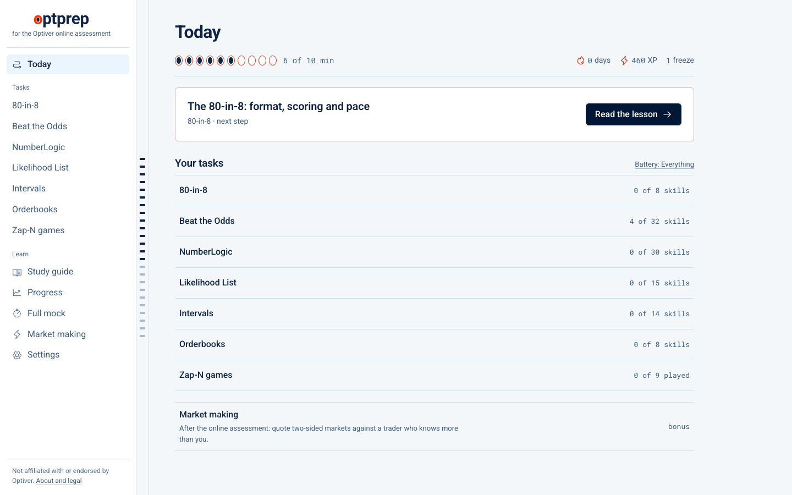

Free practice for the Optiver online assessment.
80-in-8, Beat the Odds, NumberLogic, Likelihood List, Intervals, Orderbooks and Zap-N, on the real clocks.
coflazo.github.io/optprepnpx optprep
Free and open source. Not affiliated with Optiver.
80-in-8, Beat the Odds, NumberLogic, Likelihood List, Intervals, Orderbooks and Zap-N, on the real clocks.
coflazo.github.io/optprepnpx optprep
Free and open source. Not affiliated with Optiver.
